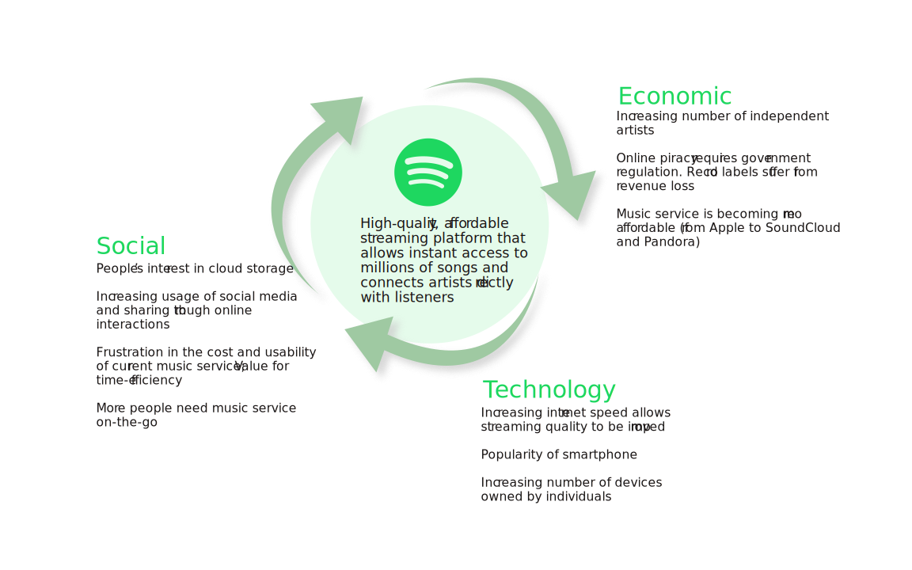

Spotify is a digital music streaming service that offers music,
podcasts, and videos on various devices. It was founded in 2006 in
Sweden and was first launched in 2008. It provided a large music
library, along with high-quality streaming on demand. Spotify
changed people’s listening experience from files downloads to
streaming in the cloud.
In this project I studied how Spotify emerged and grew as a
service by conducting PEST analysis, finding product opportunity
gap (POG), and creating the value flow between stakeholders.
This is one of my favorite projects because Spotify is my favorite
digital service. Last year I spent 120k min on this platform and
it has become a part of my daily routine. It's so interesting to
view the platform from an 'insider' perspective and see how
different socio-economic factors influenced its formation.
The most important factor to Spotify’s success is its ability to allow co-creation value for both artists and consumers. The service addresses pain points for both stakeholders and fill in the opportunity gap in the current market. When it was first launched in 2008, political, economic, social and technological factors all contribute to the formation of the service. However, legal and environmental factors did not have an immediate effect on the rise of Spotify.
Government regulates licensing deals and music copyright more strictly. Spotify was able to reduce the workload of law enforcement to control online piracy because more users were drawn to legal music platform.
Competitors such as Pandora radio and Soundcloud offer music
streaming service but quality is not so great (only 64 kpbs for
free users on Pandora). Record companies are generating more
revenues from digital music (iTunes store, etc) than from
records.
A high-quality streaming service is on demand. Playback needs to
be stable and at a higher speed. Record companies are seeking
new channels to generate revenues, potentially through
partnership with other services due to the ineffectiveness of
traditional advertising model through radio. Independent, small
artists need a platform to promote themselves and connect
directly with the listeners.
Searching for music and catching up with new releases are
time-consuming and slow for people. It’s difficult to. Free
resources are often unreliable and the music quality is worsened
by downloads. Paid service like iTunes is outrageously
expensive. Music service needs to support an extensive library
that allows more than just a “preview” of the song.
The music library also needs to move to the cloud to free
storage space on devices. Spotify recognized the need for
cloud-based music library and sharing of music interest. People
needed a service where they could truly access music on-the-go.
Almost everyone owns a smartphone. Internet speed (4G network)
has been significantly improved.
More mobile phone usage means that people are listening more
music on-the-go. There’s a need for accessing music directly
from the mobile devices, without transfering downloads from the
laptop. Increasing internet speed allowing faster and better
quality download of music.
Spotify’s MVP bridges the gap between users and artists. The key factors to Spotify’s formation include (1) demand for a fast and stable streaming service, (2) the need of artists for self-promotion and (3) increasing technological capacities.
Spotify generates revenue mainly from premium subscription (90%). The other 10% comes from ads revenues on the platform. Both free and premium users have unlimited access to millions of songs in the Spotify library, while premium users receive ad-free streaming with personalized playlist.
Independent Artists can gain popularity quickly from the listeners without the relying on any big labels, which gives them more creative freedom.
Record Companies finds a new channel to generate stable revenue through loyal subscription.
Platform Users have access to millions of songs on demand. Streaming saves them time, storage and effort to download music.